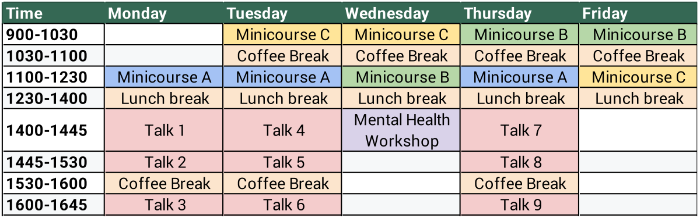
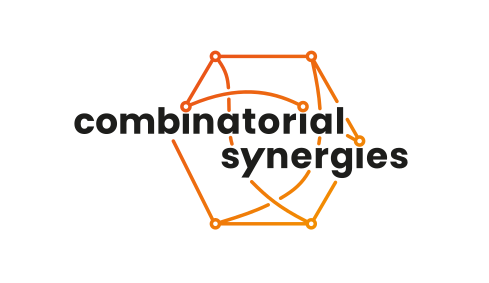

Concept
The goal of this conference is to bring together young researchers from the Combinatorial Synergies programme. Mornings will be dedicated to mini-courses and afternoons to research talks contributed by participants. We will also have a workshop on the topic of mental well-being in the scope of PhD studies.
Researchers and students from outside the Combinatorial Synergies program are also welcome to join.
The three mini-courses will be given by:
Schedule
The conference will start at 11am on Monday May 4th and will end at lunchtime on Friday May 8th. Below you may find a preliminary schedule:
{kind=link}
The schedule is subject to change.
Registration
You may register using this link.
- Registration deadline: March 15th, 2026
- Funding application deadline: Febraury 28th, 2026
You are strongly encouraged to apply for a talk, even if you don’t have any results to present. The goal of these talks is to give other participants a brief introduction to your research area, and they may be purely expository.
How to get here
The conference takes place at FU Berlin, in the room A3/019 (Arnimallee 3). The closest stations are the bus station Arnimallee (bus X83, 5 minutes walk), U-Bahn Dahlem Dorf (U3, 10 minutes walk) and S-Bahn Botanischer Garten (S1, 20 minutes walk).
Organizers
Matt Dupraz, Anna Hofer, Léo Mathis
In case of questions, please contact us at yrccs26@lists.fu-berlin.de.
